Rain, original
Steady rain (nick121087, Freesound, CC0).
t00a_rain_original.flac, 7.0 s, mono
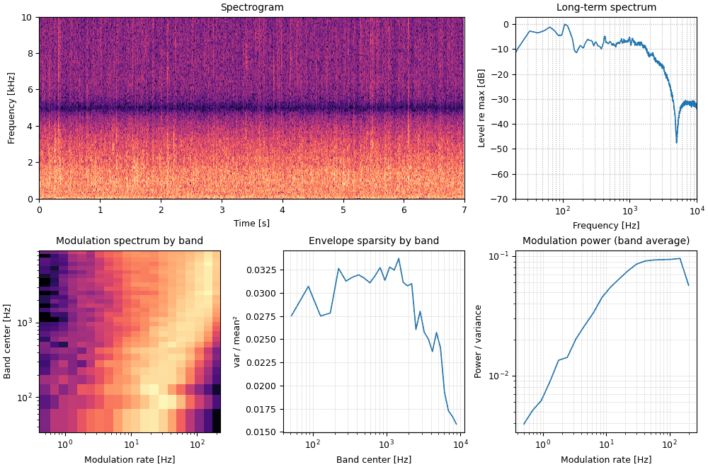
Code
sound = finish(original("rain"))
fig, playhead = texture_fig(sound, original("rain"))Rain, a creek, crickets, applause, fire: sounds made of many similar events, whose character lies in their statistics rather than in any one waveform. After McDermott & Simoncelli (2011), sonore summarizes a texture by time-averaged statistics of a model of the cochlea, and synthesizes a new sample by imposing those statistics on noise.
Press play and a line follows the sound across every time axis in its plots. Click any time axis to play from that point. The audio is lossless, since compression would alter the binaural sounds. Start with your volume low.
Every example below is the code shown with it, run after this cell: loading a recording and its synthesis, the level the gallery plays sounds at, and the plots.
import json
import matplotlib.pyplot as plt
import numpy as np
import sonore as so
from sonore.texture import TextureStats
plt.rcParams.update({"font.size": 9, "axes.titlesize": 10, "figure.dpi": 100})
FS = 44100
def finish(snd):
"""How every sound in the gallery is played: 5 ms ramps, RMS 0.1, peak at most 0.95."""
snd = snd.ramp(5e-3).normalize(rms=0.1)
return snd.normalize(peak=0.95) if snd.peak > 0.95 else snd
def original(name):
"""A recording; docs/textures/SOURCES.md says where each comes from and which excerpt."""
return so.load(f"docs/textures/{name}.flac")
def synthesized(name, imposed=""):
"""A synthesis precomputed by tools/make_texture_synths.py (below)."""
suffix = f"__{imposed}" if imposed else ""
return so.load(f"docs/textures/synth/{name}{suffix}.flac").resample(FS)
def report(name):
"""How closely the synthesis matches: the statistic SNR averaged over classes."""
info = json.loads(open(f"docs/textures/synth/{name}.json").read())
snr = np.mean(list(info["snr_all_classes"].values()))
return f"Average statistic SNR {snr:.0f} dB after {info['best_iteration']} iterations."
def texture_fig(snd, original, synthetic=False):
"""General-purpose plots (spectrogram, long-term spectrum) plus the texture
model's own statistics drawn with plain matplotlib: modulation power by
band and rate (the model's modulation spectrum), envelope sparsity, and
band-averaged modulation power. Dashed black: the original."""
fig = plt.figure(figsize=(10, 6.6), layout="constrained")
gs = fig.add_gridspec(2, 3)
ax_s = fig.add_subplot(gs[0, :2])
ax_l, ax_m, ax_v, ax_p = (fig.add_subplot(gs[r, c]) for r, c in ((0, 2), (1, 0), (1, 1), (1, 2)))
so.STFT(snd, 20e-3).plot(ax_s, fmax=10000, db_range=70, colorbar=False)
ax_s.set_title("Spectrogram")
so.long_term_spectrum(snd).plot(ax_l, lw=1.2, label="this sound")
if synthetic:
so.long_term_spectrum(original).plot(ax_l, color="k", ls="--", lw=1, label="original")
ax_l.legend(fontsize=7)
ax_l.set(xlim=(20, 10000), ylim=(-70, 3), title="Long-term spectrum")
target = TextureStats.measure(original)
this = TextureStats.measure(snd, window="uniform" if synthetic else "ramped") # syntheses are circular
cfs = target.model.filterbank.cfs[1:-1]
ok = target.channel_mask()
# The model's modulation spectrum: power at each modulation rate, in each cochlear band.
mcf = target.model.mod_bank.cfs
lev = 10 * np.log10(np.maximum(this.mod_power[1:-1], 1e-6))
ax_m.pcolormesh(mcf, cfs, lev, cmap="magma", vmin=lev.max() - 25, vmax=lev.max(), shading="nearest")
ax_m.set(
xscale="log",
yscale="log",
xlabel="Modulation rate [Hz]",
ylabel="Band center [Hz]",
title="Modulation spectrum by band",
)
ax_v.semilogx(cfs, this.env_var[1:-1], lw=1.2)
ax_p.loglog(target.model.mod_bank.cfs, this.mod_power[ok].mean(0), lw=1.2)
if synthetic:
ax_v.semilogx(cfs, target.env_var[1:-1], "k--", lw=1)
ax_p.loglog(target.model.mod_bank.cfs, target.mod_power[ok].mean(0), "k--", lw=1)
ax_v.set(xlabel="Band center [Hz]", ylabel="var / mean²", title="Envelope sparsity by band")
ax_p.set(
xlabel="Modulation rate [Hz]", ylabel="Power / variance", title="Modulation power (band average)"
)
for ax in (ax_v, ax_p):
ax.grid(ls=":", which="both", lw=0.5)
return fig, [ax_s] # the playhead follows the spectrogramThe sound is split into 30 cochlear bands (cosine filters on the ERB scale, 20 Hz to 10 kHz, plus two edge filters). Each band's envelope is compressed and downsampled to 400 Hz,
with \mathcal{H} the Hilbert transform, and each envelope is in turn split into 20 modulation bands b_{k,n}(t), 0.5 to 200 Hz, constant-Q. All averages \langle\cdot\rangle are over time, weighted by a window that tapers the recording's ends. The statistics are those of the paper:
That makes 1515 numbers per texture. Synthesis starts from Gaussian noise and adjusts each
band's subband signal by conjugate gradient until its statistics match, band by band, over
several passes. The cell below is the call tools/make_texture_synths.py makes. It takes about
2 s per iteration for 5 s of sound, so the gallery's syntheses are computed once and stored.
from sonore.texture import PAPER_CLASSES # noqa: E402
from sonore.texture.synth import synthesize # noqa: E402
def synthesize_like(name, classes=PAPER_CLASSES, seconds=5.0, iterations=30):
"""What tools/make_texture_synths.py does for each recording (not run here)."""
target = TextureStats.measure(original(name))
new, rep = synthesize(target, duration=seconds, classes=classes, rng=1, max_iter=iterations)
return new * (0.05 / new.rms)The plots: spectrogram, long-term spectrum, and three of the model's own statistics: modulation power at each rate in each band (the model's modulation spectrum), envelope sparsity \sigma_k^2/\mu_k^2, and modulation power averaged over bands. For syntheses, the original's is overlaid in dashed black.
Steady rain (nick121087, Freesound, CC0).
t00a_rain_original.flac, 7.0 s, mono

sound = finish(original("rain"))
fig, playhead = texture_fig(sound, original("rain"))Gaussian noise adjusted until its statistics match the original's. Average statistic SNR 36 dB after 28 iterations.
t00b_rain_synthesized.flac, 5.0 s, mono
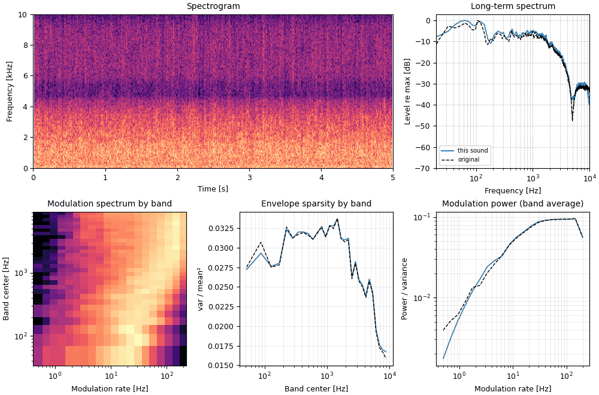
sound = finish(synthesized("rain"))
fig, playhead = texture_fig(sound, original("rain"), synthetic=True)Water burbling over rocks in a small creek (cognito perceptu, Freesound, CC0).
t01a_stream_original.flac, 7.0 s, mono
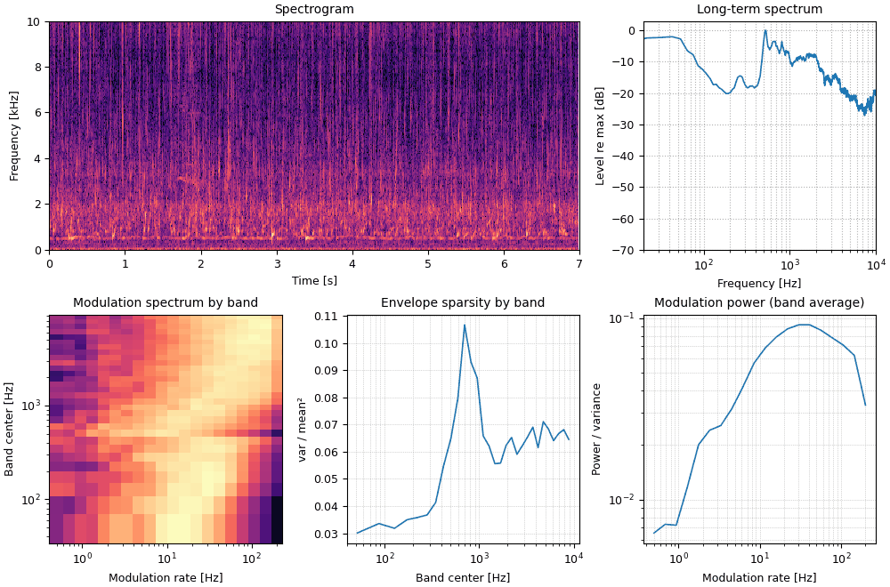
sound = finish(original("stream"))
fig, playhead = texture_fig(sound, original("stream"))Gaussian noise adjusted until its statistics match the original's. Average statistic SNR 37 dB after 30 iterations.
t01b_stream_synthesized.flac, 5.0 s, mono
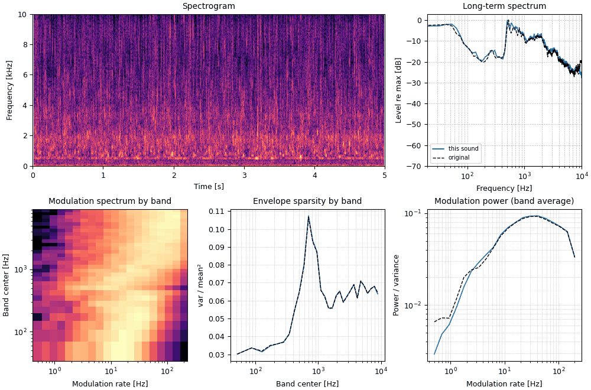
sound = finish(synthesized("stream"))
fig, playhead = texture_fig(sound, original("stream"), synthetic=True)Crickets around midnight (sengjinn, Freesound, CC0).
t02a_crickets_original.flac, 7.0 s, mono
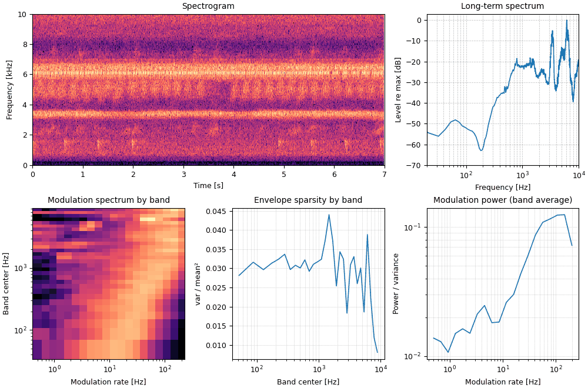
sound = finish(original("crickets"))
fig, playhead = texture_fig(sound, original("crickets"))Gaussian noise adjusted until its statistics match the original's. Average statistic SNR 36 dB after 30 iterations.
t02b_crickets_synthesized.flac, 5.0 s, mono
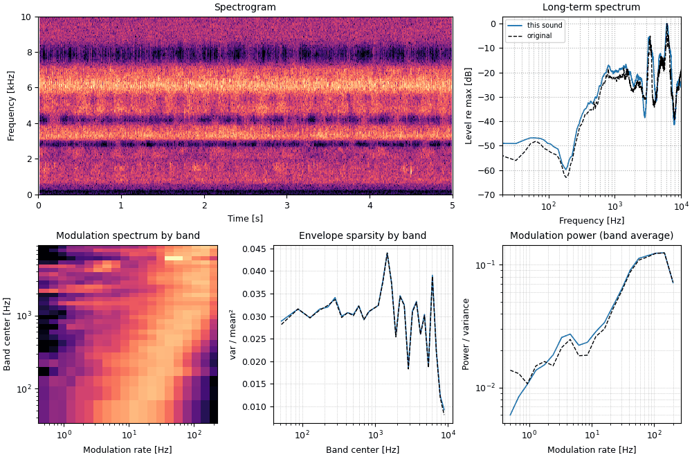
sound = finish(synthesized("crickets"))
fig, playhead = texture_fig(sound, original("crickets"), synthetic=True)About thirty people clapping (Breviceps, Freesound, CC0). Only 3.5 s of original.
t03a_applause_original.flac, 3.5 s, mono
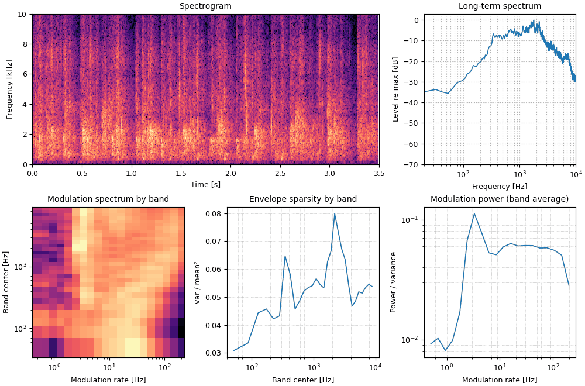
sound = finish(original("applause"))
fig, playhead = texture_fig(sound, original("applause"))Gaussian noise adjusted until its statistics match the original's. Average statistic SNR 43 dB after 30 iterations.
t03b_applause_synthesized.flac, 5.0 s, mono
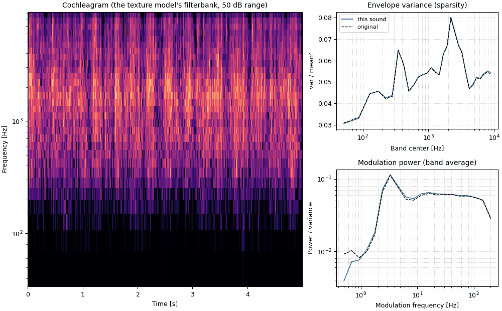
sound = finish(synthesized("applause"))
fig, playhead = texture_fig(sound, original("applause"), synthetic=True)A small backyard fire: sparse pops over a low rumble (Sauron974, Freesound, CC0).
t04a_fire_original.flac, 20.0 s, mono
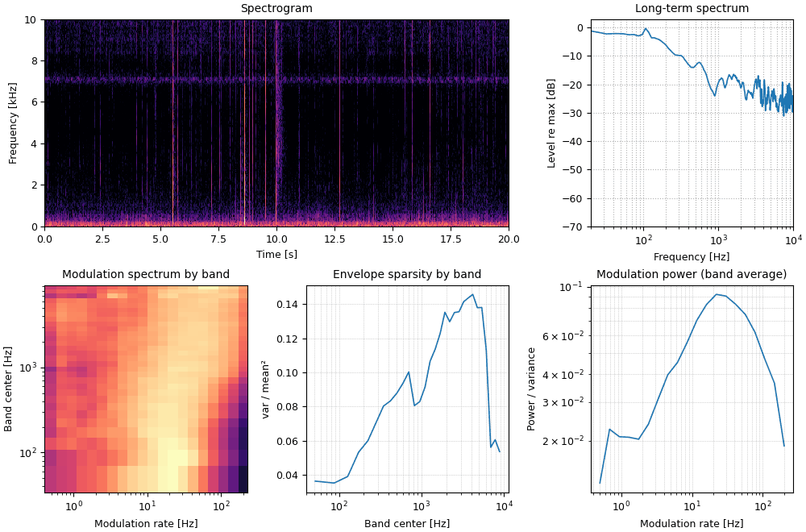
sound = finish(original("fire"))
fig, playhead = texture_fig(sound, original("fire"))Gaussian noise adjusted until its statistics match the original's. Average statistic SNR 21 dB after 29 iterations.
t04b_fire_synthesized.flac, 5.0 s, mono
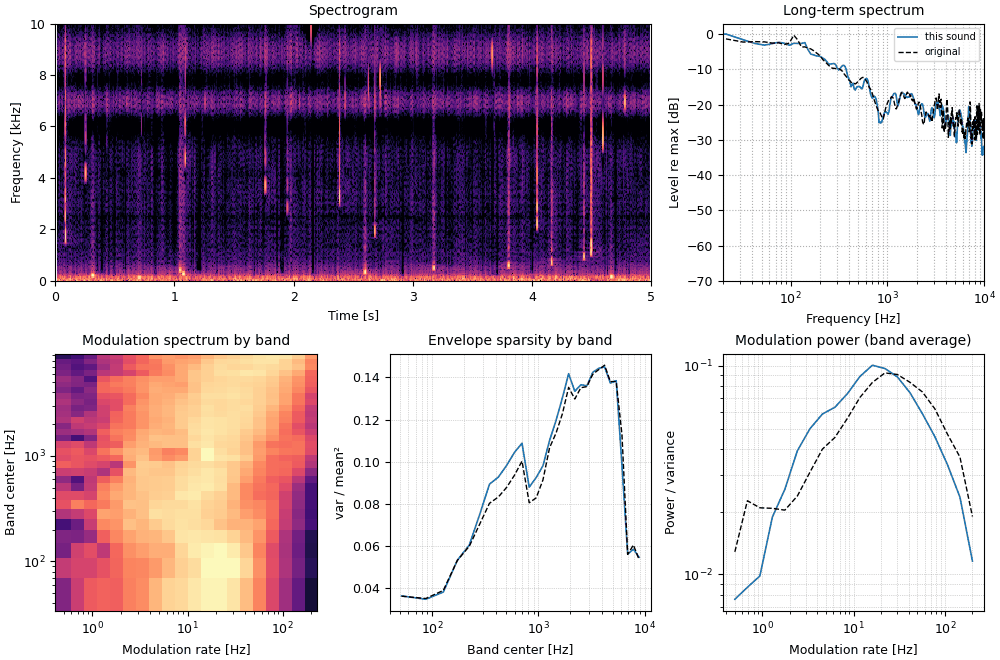
sound = finish(synthesized("fire"))
fig, playhead = texture_fig(sound, original("fire"), synthetic=True)Gas venting through a Yellowstone mud pot (NPS / Jennifer Jerrett, public domain).
t05a_bubbling_mud_original.flac, 20.0 s, mono
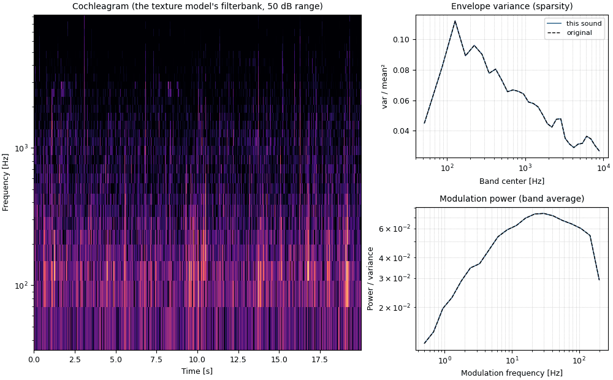
sound = finish(original("mud"))
fig, playhead = texture_fig(sound, original("mud"))Gaussian noise adjusted until its statistics match the original's. Average statistic SNR 38 dB after 29 iterations.
t05b_bubbling_mud_synthesized.flac, 5.0 s, mono
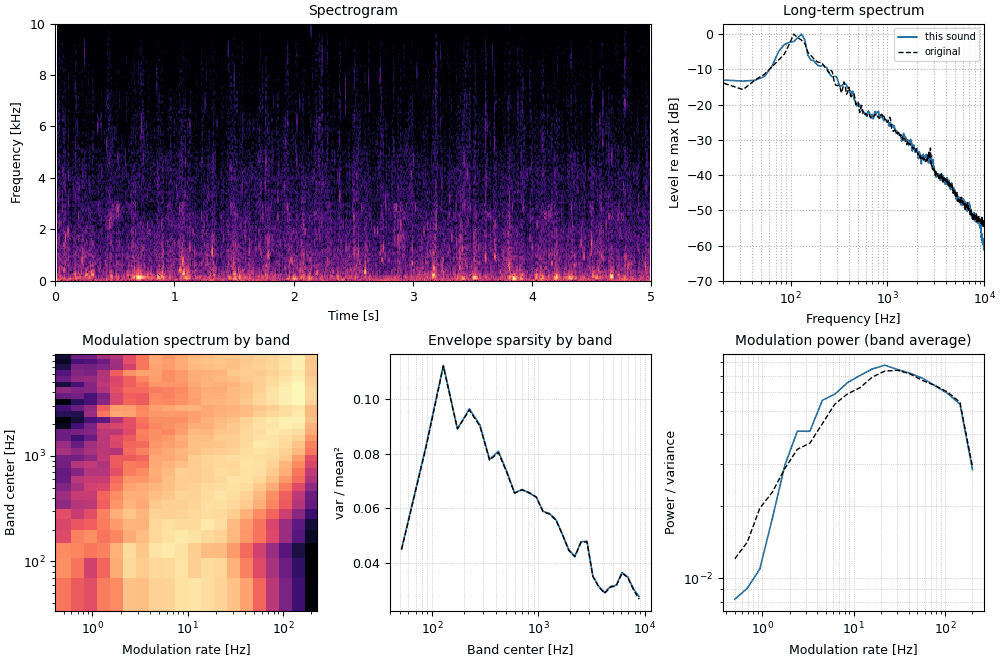
sound = finish(synthesized("mud"))
fig, playhead = texture_fig(sound, original("mud"), synthetic=True)A winter storm, wind with heavy rain (sonicwars, Freesound, CC0).
t06a_wind_and_rain_original.flac, 7.0 s, mono
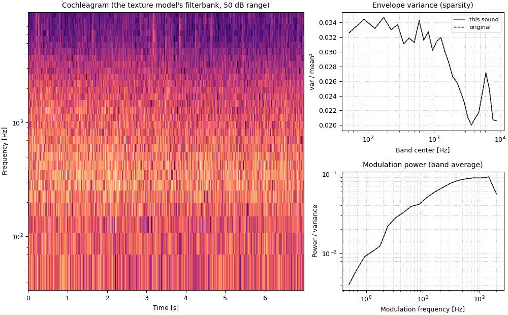
sound = finish(original("wind_rain"))
fig, playhead = texture_fig(sound, original("wind_rain"))Gaussian noise adjusted until its statistics match the original's. Average statistic SNR 39 dB after 30 iterations.
t06b_wind_and_rain_synthesized.flac, 5.0 s, mono
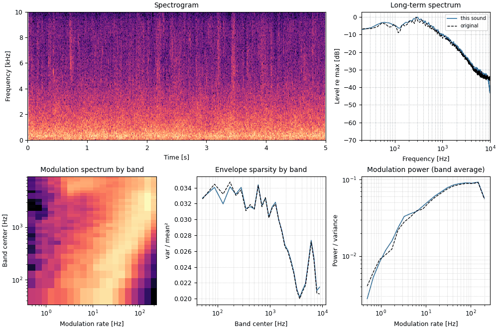
sound = finish(synthesized("wind_rain"))
fig, playhead = texture_fig(sound, original("wind_rain"), synthetic=True)The same textures synthesized with only some of the statistics imposed, by passing fewer
classes to synthesize_like:
("env_mean", "env_var", "env_skew", "env_kurt"), the envelope marginals only;"mod_power", but no correlations across bands or modulation bands.Compare with the full syntheses above: the marginals alone give the right sparsity but not the right rhythm or the coordination across bands.
Only the envelope marginals imposed (mean, variance, skew, kurtosis of each band's envelope).
u00_applause_marginals_only.flac, 5.0 s, mono
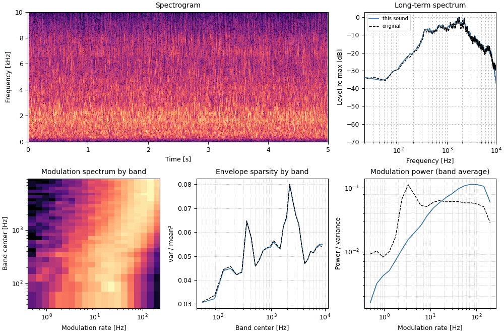
sound = finish(synthesized("applause", "marginals"))
fig, playhead = texture_fig(sound, original("applause"), synthetic=True)Envelope marginals plus modulation power; no correlations across bands or modulation bands.
u01_applause_marginals_and_modulation_power.flac, 5.0 s, mono
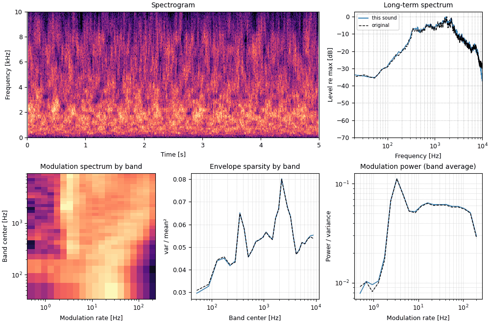
sound = finish(synthesized("applause", "marginals_modpower"))
fig, playhead = texture_fig(sound, original("applause"), synthetic=True)Only the envelope marginals imposed (mean, variance, skew, kurtosis of each band's envelope).
u10_stream_marginals_only.flac, 5.0 s, mono
sound = finish(synthesized("stream", "marginals"))
fig, playhead = texture_fig(sound, original("stream"), synthetic=True)Envelope marginals plus modulation power; no correlations across bands or modulation bands.
u11_stream_marginals_and_modulation_power.flac, 5.0 s, mono
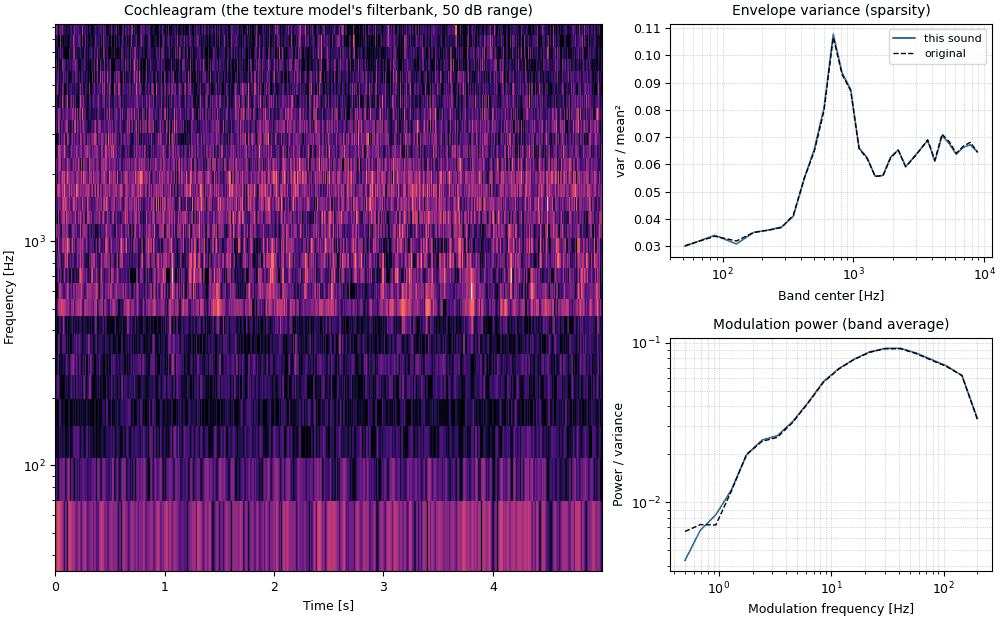
sound = finish(synthesized("stream", "marginals_modpower"))
fig, playhead = texture_fig(sound, original("stream"), synthetic=True)Only the envelope marginals imposed (mean, variance, skew, kurtosis of each band's envelope).
u20_fire_marginals_only.flac, 5.0 s, mono
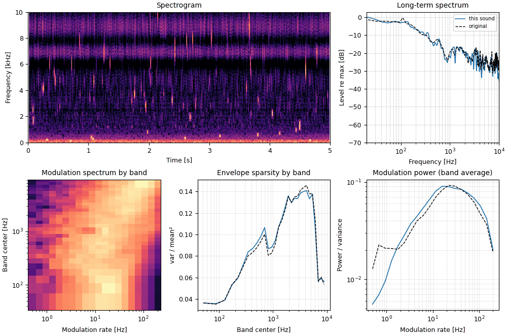
sound = finish(synthesized("fire", "marginals"))
fig, playhead = texture_fig(sound, original("fire"), synthetic=True)Envelope marginals plus modulation power; no correlations across bands or modulation bands.
u21_fire_marginals_and_modulation_power.flac, 5.0 s, mono
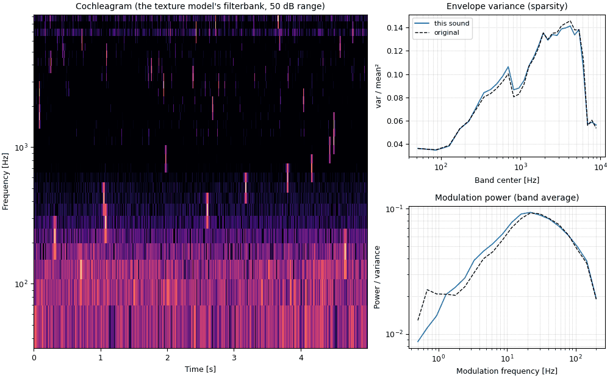
sound = finish(synthesized("fire", "marginals_modpower"))
fig, playhead = texture_fig(sound, original("fire"), synthetic=True)texture filterbank.CosineFilterbank modulation